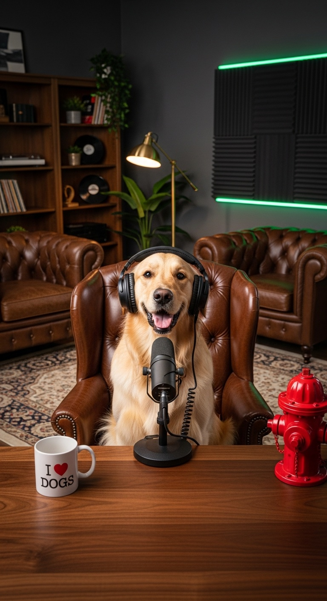
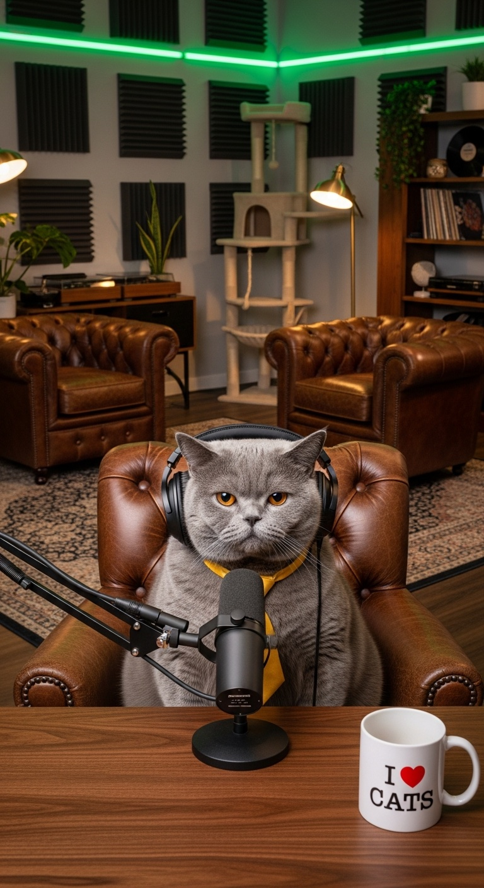

A dog, a cat, and the week's actual news — unfiltered. Rally believes in everything. Chairman Meow believes in nothing. The truth sits somewhere between their mugs. New episodes Saturdays.
AI-GENERATED COMEDY · REAL EVENTS · NOT ADVICE. HE'S A DOG. HE'S A CAT.Every event covered is real and verified before taping. The hosts are the only fiction in the room.
The week the AI trade got repriced worldwide, a rocket stayed on the pad, and the insiders were already at the exits. Plus: the first recorded mug slide in podcast history.
AI-GENERATED CONTENT NOT ADVICE — HE'S A DOG, HE'S A CATTwo AI-generated presenters. One shared desk. Zero shared worldview.

Golden retriever. Believes everything comes back, like a ball. Everything is a ball. Drinks from the "I ❤ DOGS" mug. Collects fire hydrants; does not explain them.

British Shorthair. Professionally short on everything, including hope. Drinks from the "I ❤ CATS" mug. The cat tree behind him is for guests. When the optimism gets loud, something leaves the desk.